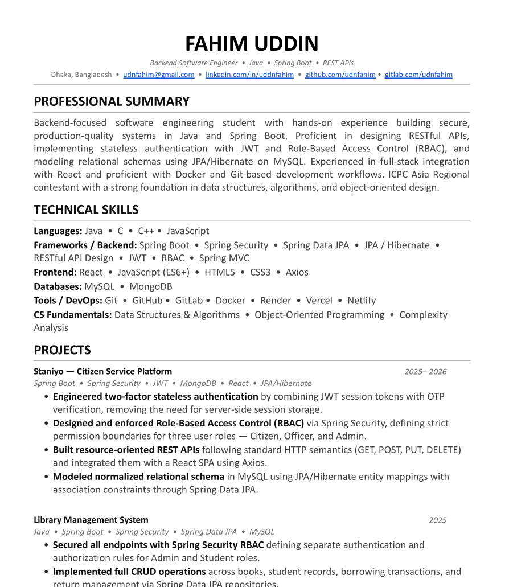

Professional
History.
A compilation of technical competencies, academic milestones, and competitive programming achievements extracted from the core system registry.
Clearance
Sr. Architect
Specialization
Backend

Fahim Uddin
Backend Architecture Specialist
Technical Core
Specialized in Spring Boot and RESTful API Design. Expert in implementing secure authentication via JWT & RBAC protocols.
Algorithmics
Two-time ICPC Regional Participant (2024, 2025). Highly proficient in complex data structures and O-notation complexity analysis.
Persistence Layer
Advanced knowledge of MySQL & JPA/Hibernate, focusing on query optimization and normalized schema design for enterprise scale.
Integrity Hash
SHA-256 Verified
Build ID
v2.0.0-STABLE
Status
Production_Ready